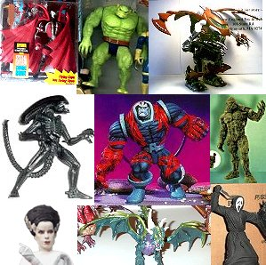

AddictionThe more I looked, the more I noticed the increasing quality of sculpts in action figures. Posability was reduced or made awkward, but that didn't matter to much to me. I was just going to display them anyway. At first I stuck to monsters, still a little wary of the stigma associated with comics by the (largely uninformed) public at large. Gradually though, I couldn't resist assembling an X-Men roster, and things grew from there. Pretty soon I was collecting figures from numerous lines, with no real focus other than I thought they were cool. A couple of times I nearly fell into the completist black hole, but managed to be at least somewhat selective.
|

|